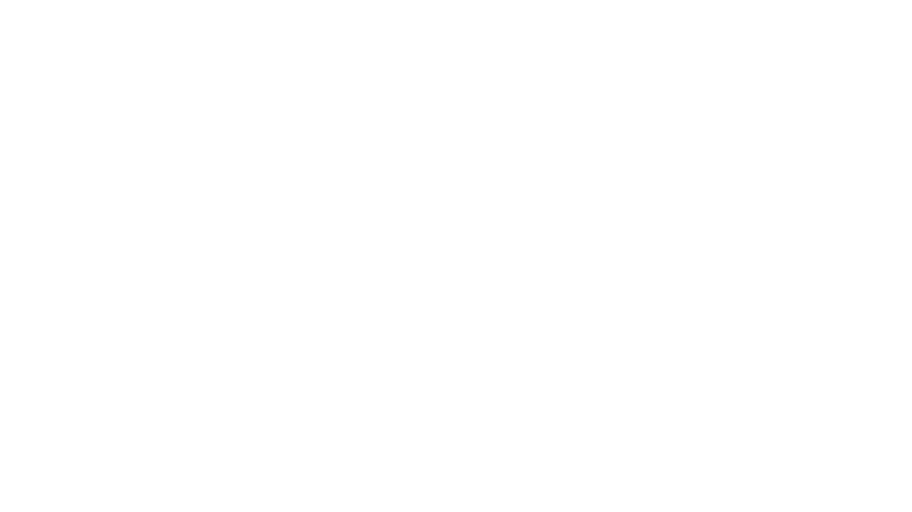

GRID · 瑞士国际主义
01 / 10
GRID · 单色锚点设计系统
OPEN IN BLUE · CLOSE IN BLUE · REGISTRY 19
zifeiyu-ppt-skill · 设计系统 03 金样 · 2026-08
GRID · 瑞士国际主义
02 / 10
01
字阶与灰阶：越大越细
03
02
数据大字报与对比度实测
05
03
三质色块：互斥的材质系统
07
04
双轨对照：DATUM 与 GRID
08
05
以蓝开场，以蓝收束
10
GRID · 瑞士国际主义
03 / 10
越大越细；强调靠颜色，不靠加粗。
—— GRID 字阶第一法则 · 巨字 200，小字 500，反差 8:1
GRID · 瑞士国际主义
04 / 10
02
真实数值 + 极细巨字 + 等宽刻度标签——数据页是瑞士系统的主舞台。
GRID · 瑞士国际主义
05 / 10
200
巨字字重
display 槽位统一 ExtraLight，负字距收紧
8:1
标题正文反差
128px 巨题对 16px 说明，双极反差即戏剧
1px
发丝线
层级只靠线宽与灰阶，禁阴影禁圆角
参数来源：assets/systems/swiss.css · 2026-08
GRID · 瑞士国际主义
06 / 10
克莱因蓝
10.3
安全橙
2.7
柠檬绿
1.4
柠檬黄
1.4
WCAG 相对亮度实测（对 #fafaf8）· 黄绿只可做高亮底色不可做字色 · 条长与数值成正比
GRID · 瑞士国际主义
07 / 10
01
整组卡片只允许一张上色——单焦点法则，蓝一旦泛滥就掉档。
02
宣言与反转页用近黑，禁纯黑；反白文字承担全部层级。
03
默认材质。禁止组合：色底加描边、灰底加描边均违规。
GRID · 瑞士国际主义
08 / 10
被测量的页面：坐标纸、裁切标、尺寸标注、图签栏。
适合工程、验证、过程叙事——证据感来自标注。
被排印的页面：色场、点阵、极端字阶、方块刻度。
适合发布、宣言、数据大字报——张力来自反差。
GRID · 瑞士国际主义
09 / 10
换一个 CSS 文件，十九个版式整套切换到瑞士语法。数据、工程、发布会类内容优先选它：真实数字配极细巨字，灰阶配唯一锚点，每一页都像仪表盘上的一格刻度。
数据汇报、产品发布、技术分享——凡是数字能自己说话的内容。
渐变、阴影、圆角、双 accent、巨字加粗——出现任何一项即掉档。
柠檬黄/柠檬绿/安全橙按许可对替换 token，全 deck 仍只有一色。
GRID · 瑞士国际主义
10 / 10
单色锚点 · 字重反比 · 三质互斥 · 色彩闭环——四条法则，一套秩序。
zifeiyu-ppt-skill · GRID 金样 · 2026-08